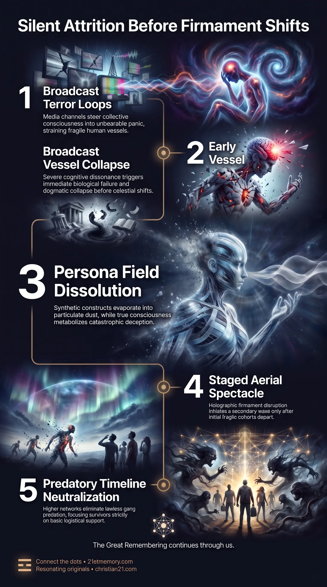

Biological Shock
Biological Shock — Fragile vessels fail under broadcast fear before any sky event.

Biological Shock — Fragile vessels fail under broadcast fear before any sky event.

The Silent Purge Before the Sky Event — The first casualty wave clears dogmatic and frail cohorts before the aerial spectacle.
The First to Go designates the initial biological and psychological casualty wave that manifests during the opening phase of the transitionary Exit sequence. Within the wider unfolding of systemic collapse, this threshold represents an early sorting dynamic that transpires entirely before the arrival of active celestial phenomena or high-density energetic shifts. As institutional manipulation reaches critical intensity and the populace is directed from peak fear to peak fear via broadcast media, specific demographics undergo acute physiological failure, psychological disintegration, or existential shock.
Rather than being triggered by anomalous atmospheric warfare, this preliminary departure is driven by the sheer inability of fragile vessels and compromised belief structures to withstand the emerging reality. The cohort encompasses the devout religious, the elderly, individuals suffering from lung and breath trouble, individuals driven to suicide, and superficial detractors characterized as lightweights or trollers. Operating as a distinct stage of mass attrition, the phenomenon purges dogmatic programming, cardiovascular vulnerability, and entrenched denial prior to the larger optical and electromagnetic culminations of the awakening cycle.
The foundational truth governing this stage is that mass physical mortality initiates long before visible anomalies manifest in the upper firmament. Mainstream populations assume that catastrophe requires kinetic bombardment or external invasion; however, the earliest casualties collapse entirely through the exposure of truth and the weaponization of psychological tension. Broadcast systems deliberately orchestrate emotional extremes, creating a pressure cooker wherein biological vessels harboring severe ideological or physiological frailties simply cease to function.
A vital distinction emerges between the fates of manufactured constructs and true spiritual essences. When confronted with the complete exposure of multi-millennial institutional corruption and the factual absence of divine protectors, the structural reaction bifurges. Simulated personas lacking eternal architecture break down fundamentally; religious NPCs evaporate directly into the ambient field as particulate pixelation. Conversely, genuine incarnated souls who remained bound to religious dogma face a devastating existential crisis, resulting either in immediate biological death from traumatic shock, suicide, or the abrupt, absolute abandonment of their theological belief systems.
Furthermore, the traumatic trajectory of this collapse does not culminate in violent lawlessness. While conventional apocalyptic assumptions anticipate roving factions and violent breakdowns across abandoned infrastructure, the timeline has been structurally altered. Sovereign spiritual networks ensure that humanity is entirely spared a marauding-gang epilogue, preventing lawless predation and containing the trauma strictly to psychological and systemic processing.
The process of departure follows a rigorous developmental progression governed by escalating fear thresholds:
Media channels steer the collective consciousness into compounding terror loops, generating unbearable internal cognitive dissonance.
Fragile biological systems fail, and dogmatic worldviews implode under early exposures, causing the first wave of deaths, suicides, and cardiovascular events.
Only after the initial groups have departed does the theatrical aerial disruption begin, precipitating a second, separate wave of terror-induced mortality.
The final electromagnetic frequency shift occurs, dissolving remaining non-player constructs while true survivors enter collective stabilization.
The initial wave claims specific segments of the population based on distinct biological and psychic vulnerabilities:
Decades of subservience to theological doctrines leave these individuals spiritually defenseless. When revelations demonstrate that venerated deities never intervened against planetary atrocities, their internal cognitive reality shatters. This realization triggers severe cardiovascular failure or driven self-annihilation, while those true souls who physically survive instantaneously drop their religious frameworks forever.
Advanced vessel age correlates with physical rigidity and weakened biological resilience. The visceral horror of public disclosures produces massive biological shock, inducing widespread fatal heart attacks before advanced energetic phases even commence.
Those suffering from pre-existing shortness of breath, asthma, or lung degradation cannot endure the physical panic responses induced by collective terror. Because emotional panic restricts diaphragm movement and severely curtails vital energy assimilation, these vessels rapidly enter acute respiratory distress and fatal asphyxiation.
Unanchored consciousnesses devoid of true spiritual orientation succumb to acute dread. Faced with the vaporization of social norms and the shattering of consensus reality, significant numbers willingly terminate their own incarnation rather than navigate the unfolding shift.
Online detractors, cynical commentators, and those who engaged exclusively in derision possess no internal fortitude. Lacking sovereign grounding, their brittle psychological shields fracture completely, causing them to break down mentally and perish alongside early casualties.
The departure of dogmatic adherents reveals the fundamental operational divide between organic consciousness and artificial personas. Religious NPCs, possessing only synthetic, hive-aligned programming, have no multidimensional durability. When the emergency broadcast transmissions demonstrate unequivocally that institutional religion was an engineered mechanism of control, the programmatic utility of the NPC terminates. Consequently, these entities undergo systemic pixelation and vaporize into the aether, leaving no biological remains.
True souls entangled in religious deception experience an entirely biological and emotional rupture. Because their vessels are inhabited by genuine consciousness, they must metabolize the catastrophic trauma of deception. For many, the emotional overload causes sudden cardiac arrest or self-inflicted termination. Those who endure the initial realization undergo instantaneous psychological transformation, severing all emotional, mental, and spiritual ties to religious deities and recognizing the artificial nature of their previous worship.
A critical protective intervention governs the social landscape during these departures. In organic, unmitigated societal failures, the collapse of municipal management fosters roving predatory factions that exploit survivors. Under current timeline directives, higher soul family networks have explicitly prohibited this development. Humanity was actively spared that degraded timeline.
Instead of armed conflict and violent street predation, the post-departure environment is characterized by heavy, catatonic silence. The surviving remnants gather into small, bewildered collectives dedicated exclusively to basic logistical survival—securing shelter, food, and heat—while operating in pure adrenaline and profound shock. Predatory crime is systematically neutralized by the overriding frequency conditions of the transition.
The phenomenon of The First to Go occupies a precise entry point within the broader transitionary process. Situated directly under the primary sequence of The Exit, it serves as the initial filtration mechanism that clears the physical plane of unsustainable densities. It is directly dependent on institutional broadcast media, which acts as the delivery mechanism for the psychological shocks that initiate physical departures.
This stage forms the necessary precursor to the Sky Event. The panic, confusion, and grief generated during this initial departure establish the emotional backdrop for the subsequent optical spectacles projected against the firmament. Once the elderly, the chronically dogmatic, and the respiratory-compromised have exited, the remaining populace is forced to witness the staged celestial conflicts and the eventual physical removal of the protective projection dome. The trauma endured during the early departure primes surviving consciousnesses for the profound structural alterations that culminate in the final electromagnetic flash.
The operational dynamics of this early mortality wave carry severe functional imperatives for stabilizing consciousness:
Total elimination of all religious beliefs, external savior figures, and theological dependencies is essential to prevent fatal psychological shock. Retaining ideological loyalty to manufactured deities ensures immediate cognitive and cardiovascular collapse when full institutional disclosures are broadcast.
Because panic directly attacks compromised pulmonary functions, developing autonomic nervous system control and conscious breathing practices is vital to withstand early collective terror spikes.
Recognizing that cynical mockers and dogmatic conformists constitute fragile, transient cohorts allows stabilizing individuals to detach emotionally from their inevitable collapse, avoiding secondary trauma.
Understanding that post-departure communities will be paralyzed by shock, rather than besieged by violent marauders, directs practical preparation toward fundamental life support, food acquisition, and grounding care for deeply traumatized survivors.
This topic is free to share. Support the archive →